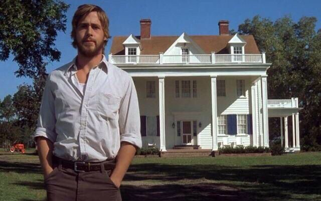
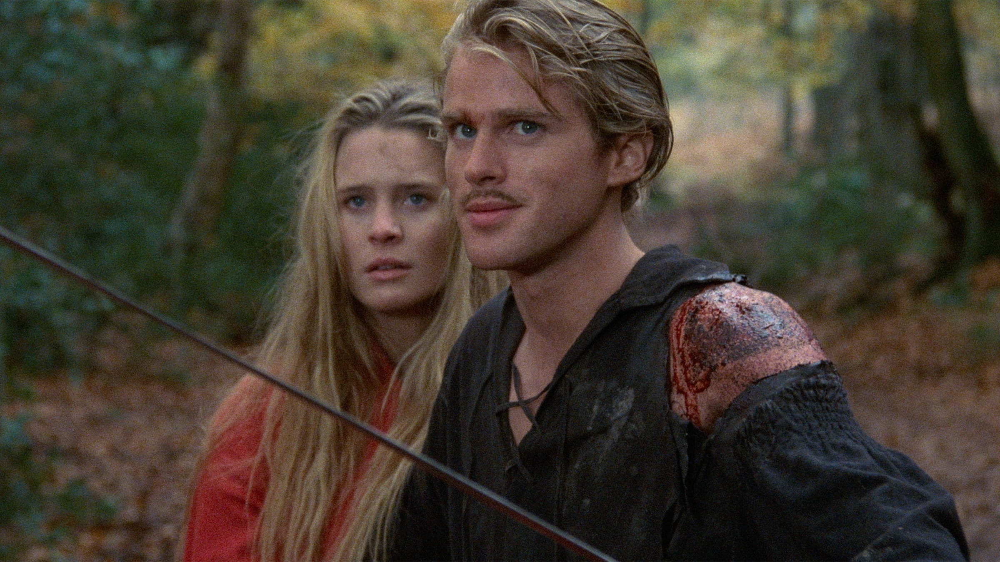
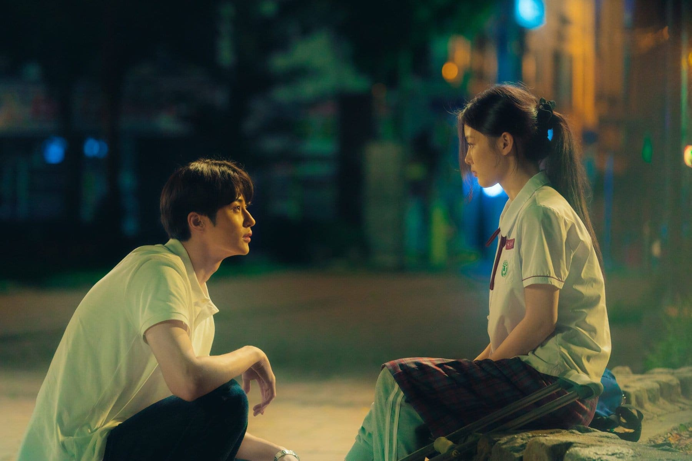

with my personal rating and review: romance edition
1. The Notebook
In 1940s South Carolina, mill worker Noah Calhoun (Ryan Gosling) and rich girl Allie (Rachel McAdams) are desperately in love. But her parents don't approve. When Noah goes off to serve in World War II, it seems to mark the end of their love affair. In the interim, Allie becomes involved with another man (James Marsden). But when Noah returns to their small town years later, on the cusp of Allie's marriage, it soon becomes clear that their romance is anything but over.

Rating: ★★★★½... I rated it 4 and a half star because I found Noah's effort to build the White House really romantic. The way they met again and found their way back into love makes me happy; it's just very redflag because Allie cheated on her husband for Noah—which makes my should've been 5 stars only 5 and a half.
2. Drawing Closer
Seventeen-year-old Akito has only a year to live and finds meaning in life by making a terminally ill girl, who has only six months to live, happy.
Rating: ★★★★★... I have rated this film a solid 5 star because this film truly goes through my heart. Their chemistry, the deep and poetic portrayal of gerberas, the tragic events, plot twists, and everything about this movie. I am just so inlove with them. This is the saddest romance of this decade, I think.
3. Notting Hill
William Thacker (Hugh Grant) is a London bookstore owner whose humdrum existence is thrown into romantic turmoil when famous American actress Anna Scott (Julia Roberts) appears in his shop. A chance encounter over spilled orange juice leads to a kiss that blossoms into a full-blown affair. As the average bloke and glamorous movie star draw closer and closer together, they struggle to reconcile their radically different lifestyles in the name of love.
Rating: ★★★★★... This one is my favorite romantic comedy of all time. I loved it despite the unrealism. I liked how silly and compulsive they was; especially Julia Roberts, she didn't care at all despite her fame. I knew this is also a cheating type of film but I still loved it because Julia Robert's husband was abusive and I didn't care about him, hence the rating 5 stars.
4. Five Feet Apart
Seventeen-year-old Stella spends most of her time in the hospital as a cystic fibrosis patient. Her life is full of routines, boundaries and self-control -- all of which get put to the test when she meets Will, an impossibly charming teen who has the same illness. There's an instant flirtation, though restrictions dictate that they must maintain a safe distance between them. As their connection intensifies, so does the temptation to throw the rules out the window and embrace that attraction.
Rating: ★★★★☆... The story and settings is really cool. I loved how funny they are; it shows the sillyness that teenage romance had. I haved rated this film 4 stars because the cinematography just feels bland for me.
5. Before Sunrise
watch the Before Trilogy (before sunrise, before sunset, before midnight)
An unexpected meeting on a train leads two travelers to spend an evening wandering through Vienna. As the night unfolds, they share stories and conversations about life and love, exploring new ideas while a quiet intimacy grows between them, knowing it may be their only night together.
Rating: ★★★★★... If someone asked for a romance film suggestion—this is what I will suggest. I love how nerdy they are especially they met because they are both reading books, and I also love books. The deep conversations they have; both nonsensical and very meaningful. I love the weirdness they have—the decision they have made not to keep contact of each other because it's too cliche. That's odd, that's how romance should be. But I won't recommend this to boring and normal people.
6. Hear Me: Our Summer
A job seeking dreamer Yong-jun works part-time at his parents’ lunch box house. Yeo-reum lives only to support for hearing-impaired swimmer sister. One day, Yong-jun meets Yeo-reum while delivering lunch boxes and falls in love at the first sight. Yeo-reum slowly opens her heart to warm-hearted Yong-jun.
Rating: ★★★★☆... I loved how cute they are. It's just the thing I found in every K-drama. Their acting is just great, cute and it looks normal. What makes this 4 stars is because I don't like some cringy scenes that I found corny, but overall, it is really great and much recommended.
7. Submarine
15-year-old deep-thinking Welsh schoolboy Oliver Tate struggles to initiate and maintain a relationship with Jordana, his devilish, dark-haired classmate at their Swansea high school. As his parents’ marriage begins to fall apart, similar problems arise in his relationship with Jordana.
Rating: ★★★★★... This is a straight 5 stars for me and this is one of my all time favorites. Mentally illed highschool students are just so cool and so sweet for each other. I love the way they handle their problems. I love their logic in life, I understand why they made it. Additionally, 6/5 stars for the best soundtrack ever; Alex Turner is just perfect for this film.
8. The Princess Bride
In this enchantingly cracked fairy tale, the beautiful Princess Buttercup and the dashing Westley must overcome staggering odds to find happiness amid six-fingered swordsmen, murderous princes, Sicilians and rodents of unusual size. But even death can’t stop these true lovebirds from triumphing.

Rating: ★★★★★... Absolute cinema, I'd say. A masterpiece of 80's and truly a classic romance. Love truly just found its way. For love, there's nothing impossible—even in a battle of wits against a trickster, a battle of strength against a giant, and a swordfight against a great warrior—no one can get in love's way.
9. 50 First Dates
Henry is a player skilled at seducing women. But when this veterinarian meets Lucy, a girl with a quirky problem when it comes to total recall, he realizes it’s possible to fall in love all over again… and again, and again. That’s because the delightful Lucy has no short-term memory, so Henry must woo her day after day until he finally sweeps her off her feet.
Rating: ★★★★½... One of my favorite romance comedies especially if I'm having a bad day. I love the setting, the beachy vibes, and the music is great. It's witty, romantic, and fun. My favorite part is when she hits Adam Sandlers friend with a bat. It's really funny. This movie really shows the meaning of true love. He kept a smile on Drew Berrymore's face a lot. I just love her blonde hair. I enjoyed seeing the sea creatures as well, I think his job was pretty exciting. You can feel and see how much he loves her. The chemistry between them was fun to watch.
10. Atonement
As a 13-year-old, fledgling writer Briony Tallis irrevocably changes the course of several lives when she accuses her older sister’s lover of a crime he did not commit.
Rating: ★★★★½... I absolutely love this film. It's everything I love in a film. Really brings the war to life in my eyes. The ending is excellent. Definitely had be balling and definitely did not see it coming. The whole film surprised me in fact. They all play really good parts in the film, never really been a big fan of Keira Knightly but think differently about her now. And Saoirse Ronan plays the Young girl, really well done. I just removed the half rating because some might expect this is a pure romance but no, it talks a little much about the war and the soldier's sufferings.
11. Chungking Express
Two melancholic Hong Kong policemen fall in love: one with a mysterious underworld figure, the other with a beautiful and ethereal server at a late-night restaurant.
Rating: ★★★★★... 5/5, no explanation needed. Wong Kar-wai is really the goat.
12. 20th Century Girl
In 1999, a teen girl keeps close tabs on a boy in school on behalf of her deeply smitten best friend – then she gets swept up in a love story of her own.

Rating: ★★★★★... 20th Century Girl was a movie that I'll never forget. After watching this movie it makes me appreciate time and friends. I think the whole movie is based on how high-school years pass by and how you should love every second of it. This movie made me cry so much to the point I felt like I was Bora-Ra. The actors did a phenomenal job at playing their roles. The production was beautiful too. To me, 20th Century Girl isn't just a cheesy romantic/heartbreak movie, it has so much more to it.
13. Eternal Sunshine of the Spotless Mind
Joel Barish, heartbroken that his girlfriend underwent a procedure to erase him from her memory, decides to do the same. However, as he watches his memories of her fade away, he realises that he still loves her, and may be too late to correct his mistake.
Rating: ★★★★★... It has very creative writing and direction and it is, in my opinion, the best acting that Jim Carrey has ever done. But the big reason why I love this movie is because it is an exceedingly rare example of a romance that is both artistically valuable and very entertaining. If I want to select a movie that I know typical viewers and film buffs will both enjoy, then this is a great option.
14. 10 Things I Hate About You
On the first day at his new school, Cameron instantly falls for Bianca, the gorgeous girl of his dreams. The only problem is that Bianca is forbidden to date until her ill-tempered, completely un-dateable older sister Kat goes out, too. In an attempt to solve his problem, Cameron singles out the only guy who could possibly be a match for Kat: a mysterious bad boy with a nasty reputation of his own.
Rating: ★★★★⯪... I hate the way you talk to me
And the way you cut your hair
I hate the way you drive my car
I hate it when you stare
I hate your big dumb combat boots
And the way you read my mind
I hate you so much that it makes me sick
And even makes me rhyme
I hate the way you're always right
I hate it when you lie
I hate it when you make me laugh
Even worse when you make me cry
I hate it when you're not around
And the fact that you didn't call
But mostly I hate the way I don't hate you
Not even close
Not even a little bit
Not even at all
15. Punch-Drunk Love
A socially awkward and volatile small business owner meets the love of his life after being threatened by a gang of scammers.
Rating: ★★★★⯪... I love this movie so much its not even funny. To all the people saying it made you feel anxious and that you didn't like it for that reason, this simply isn't for you. you were probably expecting a typical shallow easy to watch Adam Sandler movie and were met with this mess (i mean that very lovingly). Yes, this movie is stressful, but that's really the whole point. Its showing you how Barry sees the world. 5 star because Paul-Thomas Anderson is really the GOAT.